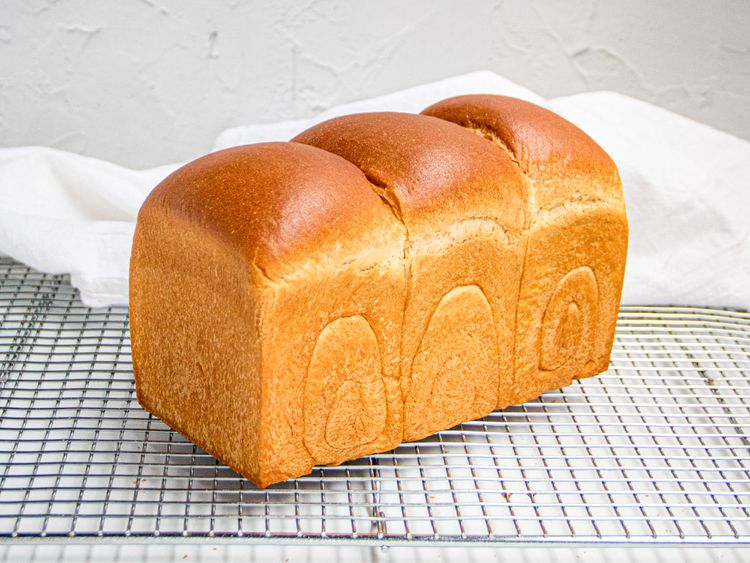

Shokupan

Description
An incredibly soft, fluffy, and pillowy white bread made using the Tangzhong
starter method to lock in moisture.
Ingredients
- 2.5 cups bread flour
- 2 tablespoons sugar
- 1 teaspoon instant yeast
- 1 teaspoon salt
- 3/4 cup warm milk
- 2 tablespoons softened unsalted butter
- 2 tablespoons bread flour mixed with 6 tablespoons water (Tangzhong)
Steps
-
Make the Tangzhong by whisking 2 tablespoons flour and
6 tablespoons water in a small saucepan over low heat
until it thickens into a paste; let it cool completely.
-
In a large bowl, combine the remaining bread flour, sugar, yeast,
and salt.
-
Add the warm milk and the cooled Tangzhong paste to the dry ingredients, mixing
until a dough forms.
-
Knead the dough for about 5 minutes, then add the softened butter
and continue kneading until the dough becomes smooth, elastic, and passes the
windowpane test.
-
Place the dough in a greased bowl, cover it, and let it rise in a
warm spot for about 1 hour or until doubled in size.
-
Punch down the dough, divide it into equal portions, roll them up, place them into
a greased Pullman loaf pan, let rise again for
45 minutes, and then bake at 350°F
(175°C) for 30 minutes until golden brown.
Home